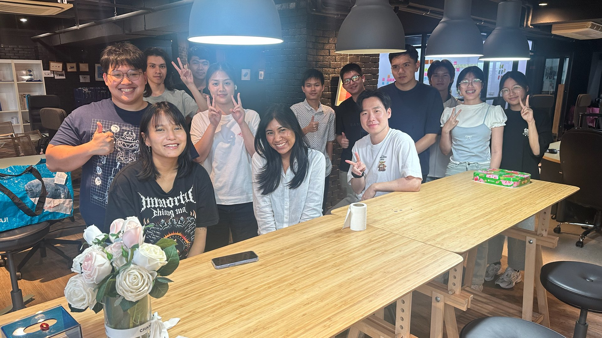

LANDOM · ชุมชนของคนที่ร่วมสร้าง LANDOMETER
ไม่ใช่สถานที่ แต่คือผู้คน
Landom — แลนด้อมของคนที่อยากเข้าใจเมืองและช่วยกันทำให้ดีขึ้น
—
คนใน Landom
กำลังโหลดข้อมูลล่าสุด
ชาว Landom
รู้จักพวกเรา ที่อยู่เบื้องหลังแต่ละงาน
กำลังโหลด…
ไม่พบข้อมูลที่ค้นหา
ลองใช้คำค้นสั้นลง หรือล้างตัวกรองแล้วค้นหาอีกครั้ง
โหลดข้อมูลไม่สำเร็จ
โปรดลองอีกครั้ง ข้อมูลบุคคลจะไม่ถูกแทนที่ด้วยข้อมูลที่ยังไม่ได้ยืนยัน